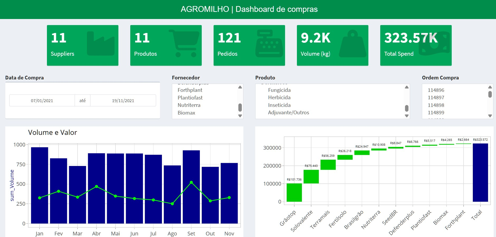

R e Power BI
A linguagem R tem algumas vantagens, e uma delas é que a linguagem é muito eficaz para se construir visualizações e gráficos. A sintaxe dos códigos do ggplot2, por exemplo, são muito intuitivas e também permite construir gráficos bem elaborados por conta da sua flexibilidade pois é baseada na gramática dos gráficos. Também é possível ‘transformar’ os gráficos estáticos desenvolvidos em ggplot2 em gráficos interativos utilizando o pacote plotly. Outra vantagem que temos é que hoje em dia tem-se pacotes que permitem criar aplicações web de forma mais tranquila do que na década passada, por exemplo, o shiny.
Outras tecnologias também já são amplamente utilizadas por profissionais de Business Intelligence, tais como o Power BI e o Tableau. Através do modo ‘clica e arrasta’, é possível criar visualizações bem interessantes e que agradam os olhos por assim dizer. Por exemplo, ao abrir o Dashboard de Compras | Agromilho, desenvolvido por Letícia Smirelli em Power BI, é possível perceber as diferentes interatividades disponíveis no painel.
As duas tecnologias, isto é, linguagem de programação ou plataforma de BI são interessantes. Eu iniciei os meus primeiros estudos de análise de dados com a linguagem R, mas também tive algum contato com o Power BI em outras oportunidades. Essas duas tecnologias são importantes pois podem auxiliar a gerar resultados bem interessantes. Em suma, este post foi feito com o objetivo divulgar um resultado de estudos e também um painel interativo construído com a linguagem R.
O painel interativo

Para conferir o painel interativo em R, consulte o link: https://irsa.shinyapps.io/project/
Alguns pontos importantes:
- É importante que a resolução de sua tela seja no mínimo 1920 x 1080 para melhor experiência de usuário.
- Para interagir com os elementos visuais, é necessário utilizar a tecla *Ctrl* para selecionar mais de um filtro.
- Se atualizar a página, os filtros selecionados anteriormente são desfeitos.
- Se tiver alguma sugestão de modificação ou melhoria, fico à disposição. Obrigado por ter lido.
Referencias
https://www.amazon.com.br/Grammar-Graphics-Leland-Wilkinson/dp/0387245448
http://vita.had.co.nz/papers/layered-grammar.html